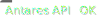

![[Experimental]](figures/lifecycle-experimental.svg)
Create a new binding constraint in an Antares study.
Usage
createBindingConstraint(
name,
id = tolower(name),
values = NULL,
enabled = TRUE,
timeStep = c("hourly", "daily", "weekly"),
operator = c("both", "equal", "greater", "less"),
filter_year_by_year = "hourly, daily, weekly, monthly, annual",
filter_synthesis = "hourly, daily, weekly, monthly, annual",
coefficients = NULL,
group = NULL,
overwrite = FALSE,
opts = antaresRead::simOptions()
)Arguments
- name
The name for the binding constraint.
- id
An id, default is to use the name.
- values
Values used by the constraint. It contains one line per time step and three columns "less", "greater" and "equal" (see documentation below if you're using version study >= v8.7.0)
- enabled
Logical, is the constraint enabled ?
- timeStep
Time step the constraint applies to :
hourly,dailyorweekly.- operator
Type of constraint: equality, inequality on one side or both sides.
- filter_year_by_year
Marginal price granularity for year by year
- filter_synthesis
Marginal price granularity for synthesis
- coefficients
A named list containing the coefficients used by the constraint, the coefficients have to be alphabetically ordered see examples below for entering weight or weight with offset.
- group
"character" group of the constraint, default value : "default group"
- overwrite
If the constraint already exist, overwrite the previous value.
- opts
List of simulation parameters returned by the function
antaresRead::setSimulationPath()
Details
According to Antares version, usage may vary :
< v8.7.0 : For each constraint name, a .txt file containing 3 time series "less", "greater", "equal"
>= v8.7.0 : For each constraint name, one file .txt containing <id>_lt.txt, <id>_gt.txt, <id>_eq.txt
Parameter values must be named list ("lt", "gt", "eq") containing data.frame scenarized.
see example section below.
See also
Other binding constraints functions:
createBindingConstraintBulk(),
editBindingConstraint(),
removeBindingConstraint()
Examples
if (FALSE) { # \dontrun{
# < v8.7.0 :
# Create constraints with multi coeffs (only weight)
createBindingConstraint(
name = "myconstraint",
values = matrix(data = rep(0, 8760 * 3), ncol = 3),
enabled = FALSE,
timeStep = "hourly",
operator = "both",
coefficients = list("area1%area2" = 1,
"area1%area3" = 2)
)
# Create constraints with multi coeffs + offset
createBindingConstraint(
name = "myconstraint",
values = matrix(data = rep(0, 8760 * 3), ncol = 3),
enabled = FALSE,
timeStep = "hourly",
operator = "both",
coefficients = list("area1%area2" = "1%1",
"area1%area3" = "2%3")
)
# >= v8.7.0 :
# values are now named list containing `data.frame` according to
# `operator` parameter (for "less", build a list with at least "lt" floor in list)
# data values (hourly)
df <- matrix(data = rep(0, 8760 * 3), ncol = 3)
values_data <- list(lt=df)
# create bc with minimum value
createBindingConstraint(name = "bc_example",
operator = "less",
values = values_data,
overwrite = TRUE)
# or you can provide list data with all value
values_data <- list(lt=df,
gt= df,
eq= df)
createBindingConstraint(name = "bc_example",
operator = "less",
values = values_data,
overwrite = TRUE)
} # }